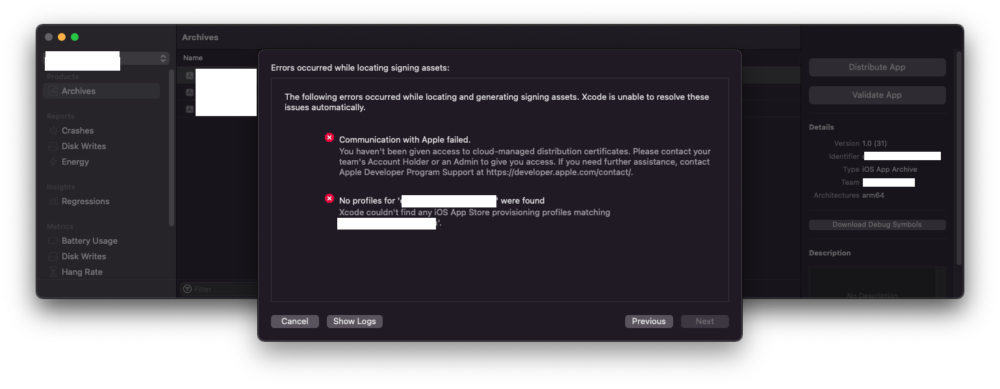
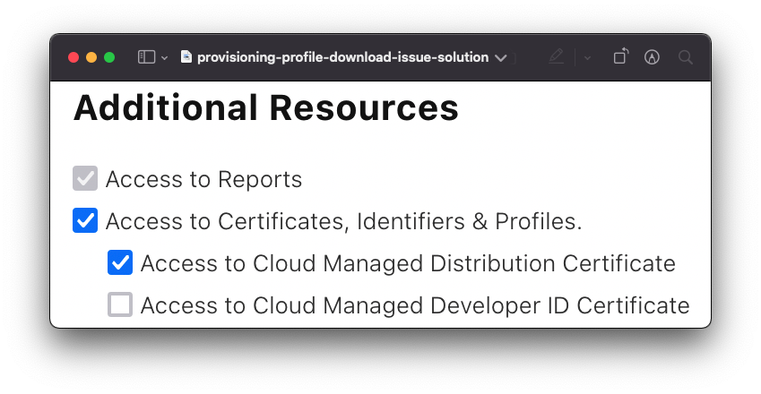

How to fix the issue with downloading provisioning profile for your app after upgrading to Xcode 13?
After using macOS BigSur for almost an year, we decided to upgrade to macOS Monterey. Once we upgraded to the brand new OS, we also decided to get all the way with the new UI/UX and update our Xcode to the latest version. So we upgraded from Xcode 12 to Xcode 13.
macOS Monterey and Xcode 13
Without any doubt macOS Monterey and Xcode 13 looked great in the new UI. And UX is great as the usable screen area has increased a lot. Eventhough we loved the new UI, it took a little bit of time for us to get used to the new icons in the Xcode 13 and the UX changes.
Issue with downloading provisioning profile while trying to upload an archive in Xcode 13 - Our first issue
We were in rush working with one of our project as we were almost close to the deadline of delivering the app to our client. We were in final rounds of testing and we were making an archive to upload to AppStoreConnect and Testflight for regression and beta testing. After creating the archive we tried to upload it to the AppStoreConnect and we got stuck there. The issue is we were not able to get the provisioning profile like we used to. Apple must have changed the Xcode 13’s behaviour about how it manages and downloads the provisioning profile.

Solution?
The cause of the issue is that Apple changed the way Xcode manages provisioning profiles. Instead of locally creating and managing provisioning profiles, Apple moved them to the cloud. And they didn’t just stop there and updated the user roles & access in App Store Connect and added an additional Access to Cloud Managed Distribution Certificate permission under Access to Certificates, Identifiers & Profile in Additional Resources. You need to be an Admin in order to enable this for anyone with Developer role. Follow the steps below to fix this issue.
- Go to
App Store Connect - Select the “Users and Access” tab
- Select the right person and under Additional Resources, check both
Access to Certificates, Identifiers & Profiles andAccess to Cloud Managed Distribution Certificate
We found this issue as an easy one to fix, Thanks to Michal Šrůtek on Stackoverflow. His solution is easy to follow.